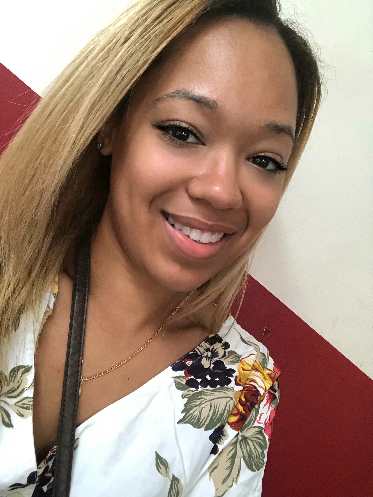

Hello! My name is Rosalie Ramos. I am a computer science major in my senior year in Kean Univeristy. This is my last semester and I will be graduating in May 2021. Currently, I am interning as a front-end developer at a company called One National Conversation. Due to COVID, we are all currently working remote as well. The languages I am most comfortable with are HTML, CSS, Javascript along with React.js framework. My short term goal is to find a full time job as a front end developer or software engineer by the time I graduate. As for long term, there are future projects I would love to complete when I have more free time. Outside of coding, I have been playing the violin for about 17 years, I love to playing videogames, painting and assemblying resin kits, and I am also a big fan of the anime Sailor Moon.
I found that I am much more interested in front end development than I am with backend, security, or database. All my life I have been a creative person than I am technical. Front end allows me to keep embracing the creative side of myself. Even now I picked up a new favorite hobby where I paint and assemble figures of popular anime characters. Which is something similar to the image in my home page. It takes a lot of work such as priming, pinning, sanding, drilling, painting, putty, a lot of patience, and much more. But the finished product is always worth it. Which is why I think I will stick more with front end to allow me to things such as building the small webpage.